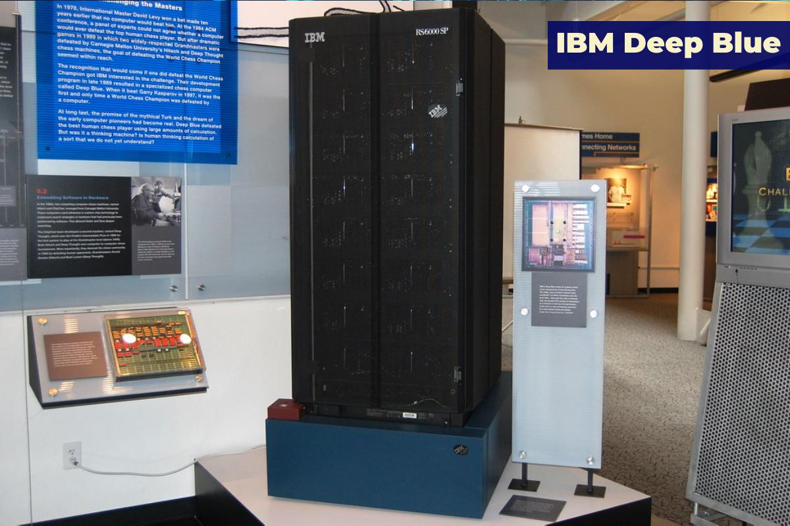
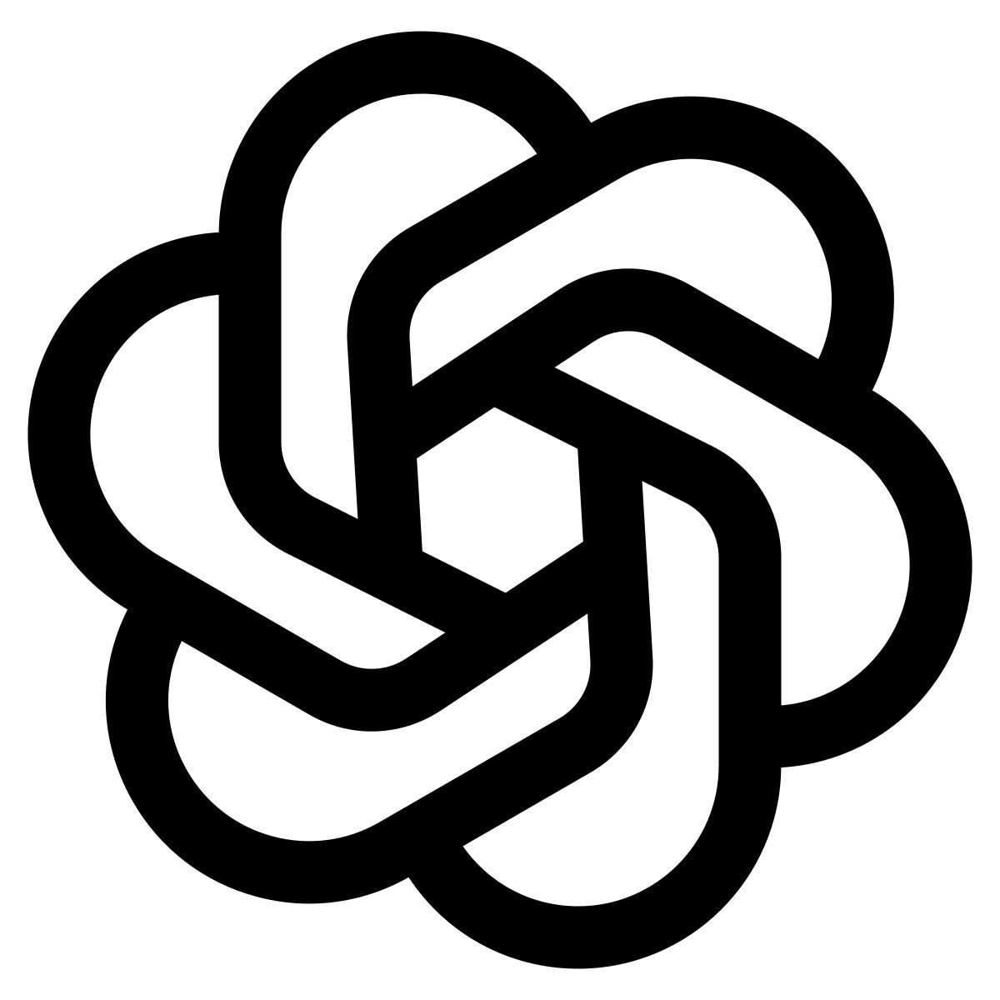

Olulised läbimurded

1997 – Deep Blue võitis male maailmameistrilt Kasparovilt

2012 – Sügavõpe (deep learning) murrab läbi pildituvastusel

2022 – ChatGPT muudab AI kättesaadavaks kõigile
AI on arvutiteaduse haru, mille eesmärk on luua süsteeme, mis suudavad täita ülesandeid, mis tavaliselt nõuavad inimlikku intelligentsust – näiteks kõneleda, õppida ja probleeme lahendada.
Masinõpe on AI valdkond, kus süsteemid õpivad andmetest iseseisvalt, ilma et neile iga sammu jaoks täpseid juhiseid antaks. Tänapäeva kõige võimsamad AI mudelid põhinevad just sellel
AI mõjutab juba praegu meditsiini, haridust, transporti ja kunsti. ai areng toob suuri võimalusi ja väljakutseid, millega ühiskond alles õpib toime tulema.

1997 – Deep Blue võitis male maailmameistrilt Kasparovilt
2012 – Sügavõpe (deep learning) murrab läbi pildituvastusel

2022 – ChatGPT muudab AI kättesaadavaks kõigile
Tehisintellektiga seotud usaldusväärsed allikad:
Tagasi üles ↑